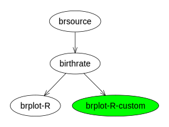
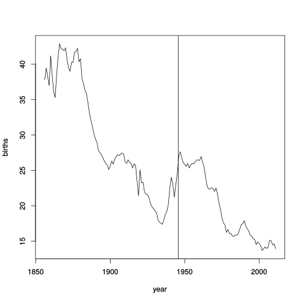
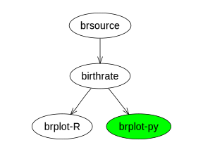
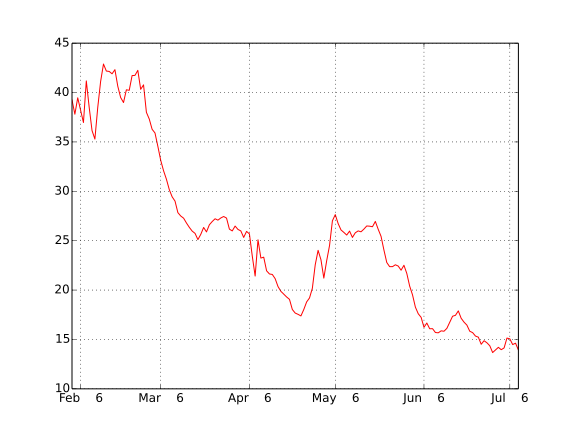

By Paul Murrell and Ashley Noel Hinton
Paul Murrell's talk The openapi Project introduced the goals and ideas of openapi, and demonstrated some pipeline examples in a prototype glue system oaglue. This page details the same pipeline examples being run in another prototype glue system, conduit.
As 'oaglue' and 'conduit' are both under active development, the pipeline XML scripts from the talk needed to be modified to run in 'conduit'. A comparison of the pipeline XML file for the first example follows.
The differences between the two documents mostly relate to the naming of XML nodes and attributes. The basic structure of a list of components and a list of pipes connecting components is visible in both versions.
The module and pipeline XML files are found in the scripts sub-directory, with a further subdirectory for the Wiki NZ example and the Internet Party example. Data and source files for each example are found in the respective sub-directories.
As 'conduit' is still under active development, I have provided a tarball of the package as it was when this page was created.



